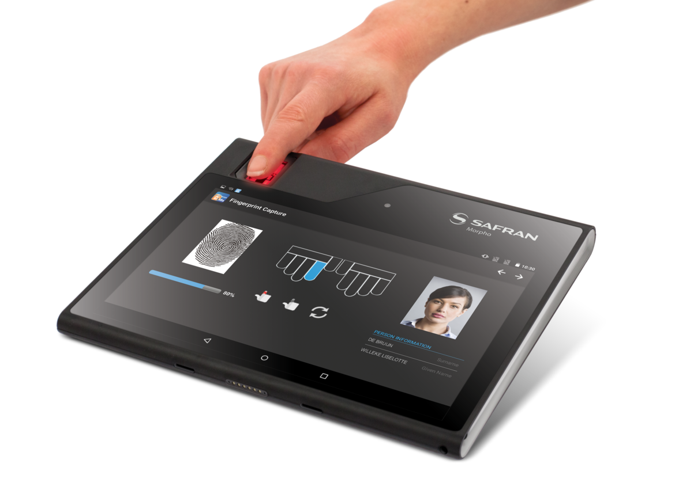

CBM (Compact Biometric Module) is an IDEMIA Fingerprint sensor which is able to capture raw images and iso fmr as well as its own proprietary templates. It is easy for developers to use Sensor to capture/verify with the help of samples and the programming guide. CBM Sample is basically divided into two major parts:
This jar is responsible for all the operations related to CBM. It depends on libNativeMorphoSmartSDK_6.19.4.0.so.
Application sample will show basic usage of CBM : How to import MorphoSmart_SDK_6.19.4.0.jar method into an Android based projects. How to access fingerprint class and method inside jar. Perform Capture/Verification process using required classes and methods.
Description – The method initializes the fingerprint sensor device.
Third parameter of the function "USBManager.getInstance().initialize" must always be true!
// Initialize and open USB devise
public MorphoDevice initMorphoDevice() {
int ret = 0;
// On Morphotablet, 3rd parameter (enableWakeLock) must always be true
USBManager.getInstance().initialize(this, "com.morpho.morphosample.USB_ACTION", true);
MorphoDevice md = new MorphoDevice();
Integer nbUsbDevice = new Integer(0); // Do not use Integer.valueOf
ret = md.initUsbDevicesNameEnum(nbUsbDevice);
if (ret == ErrorCodes.MORPHO_OK) {
if (nbUsbDevice != 1) {
//Check your USB MorphoSmart™ device!
//Is it powered?
//Did you plug more than one USB MorphoSmart™ device?
} else {
String sensorName = md.getUsbDeviceName(0); // We use first CBM found
ret = md.openUsbDevice(sensorName, 0);
if (ret != ErrorCodes.MORPHO_OK){
//Error opening USB device
}
}
}
else{
//Error initializing USB device
}
return md;
}
Description – To start capturing fingerprints, use method capture() from a MorphoDevice object. Parameters here are set as an example to capture one fingerprint.
int ret = 0;
//Set the parameters for capture
int timeout = 30;
final int acquisitionThreshold = 0;
int advancedSecurityLevelsRequired = 0;
int fingerNumber = 1;
TemplateType templateType = TemplateType.MORPHO_PK_ISO_FMR;
TemplateFVPType templateFVPType = TemplateFVPType.MORPHO_NO_PK_FVP;
int maxSizeTemplate = 512;
EnrollmentType enrollType = EnrollmentType.ONE_ACQUISITIONS;
LatentDetection latentDetection = LatentDetection.LATENT_DETECT_ENABLE;
Coder coderChoice = Coder.MORPHO_DEFAULT_CODER;
int detectModeChoice = DetectionMode.MORPHO_ENROLL_DETECT_MODE.getValue()
| DetectionMode.MORPHO_FORCE_FINGER_ON_TOP_DETECT_MODE.getValue();
TemplateList templateList = new TemplateList();
// Define the messages sent through the callback
int callbackCmd = CallbackMask.MORPHO_CALLBACK_COMMAND_CMD.getValue()
| CallbackMask.MORPHO_CALLBACK_IMAGE_CMD.getValue()
| CallbackMask.MORPHO_CALLBACK_CODEQUALITY.getValue()
| CallbackMask.MORPHO_CALLBACK_DETECTQUALITY.getValue();
/********* CAPTURE *************/
ret = morphoDevice.capture(timeout, acquisitionThreshold, advancedSecurityLevelsRequired,
fingerNumber, templateType, templateFVPType, maxSizeTemplate, enrollType,
latentDetection, coderChoice, detectModeChoice, templateList, callbackCmd, cbmProcessObserver);
For a detailed description of the capture method, please refer to MorphoSmart Programmer's Guide.
Description – The templates are stored in a TemplateList during capture and can then be saved to files.
// Here fingerNumber was previously set to 1, so we will get only one template
int nbTemplate = templateList.getNbTemplate();
if (nbTemplate == 1) {
SimpleDateFormat sdf = new SimpleDateFormat("yyyyMMdd");
String currentDateandTime = sdf.format(new Date());
String file_name = "sdcard/TemplateFP_" + currentDateandTime + "_" + System.currentTimeMillis();
file_name += templateType.getExtension();
final String filename = file_name;
final Template t = templateList.getTemplate(0);
//To save the template to a file
FileOutputStream fos = null;
try {
fos = new FileOutputStream(filename);
fos.write(t.getData());
fos.close();
} catch (Exception e) {
Log.e("CaptureFragment", "FileOutputStream : " + e.getMessage());
}
}
Description – Call this function to verify a fingerprint against an already stored fingerprint template.
//Set the parameters to verify the template
String match = "";
int ret = 0;
int timeOut = 30;
int far = MORPHO_FAR_5;
Coder coder = MORPHO_MSO_V9_CODER;
int detectModeChoice = DetectionMode.MORPHO_ENROLL_DETECT_MODE.getValue()
| DetectionMode.MORPHO_FORCE_FINGER_ON_TOP_DETECT_MODE.getValue();
int matchingStrategy = MatchingStrategy.MORPHO_STANDARD_MATCHING_STRATEGY.getValue();
final TemplateList templateList = new TemplateList();
int callbackCmd = CallbackMask.MORPHO_CALLBACK_IMAGE_CMD.getValue()
| CallbackMask.MORPHO_CALLBACK_COMMAND_CMD.getValue();
final ResultMatching resultMatching = new ResultMatching();
// Read the template file provided by the user
byte[] buffer = readFile();
if (buffer != null) {
template = new Template();
template.setData(buffer);
template.setTemplateType(TemplateType.MORPHO_PK_ISO_FMR);
templateList.putTemplate(template);
/********* VERIFY *************/
ret = morphoDevice.verify(timeOut, far, coder, detectModeChoice, matchingStrategy,
templateList, callbackCmd, processObserver, resultMatching);
if (ret != ErrorCodes.MORPHO_OK) {
String err = "";
//Check different return values
if (ret == ErrorCodes.MORPHOERR_INVALID_FINGER || ret == ErrorCodes.MORPHOERR_NO_HIT) {
err = "Authentication or Identification failed";
match = "Template doesn't match";
} else {
err = "Error code is " + ret;
}
} else {
if (resultMatching != null) {
match = "Matching score: " + resultMatching.getMatchingScore();
}
}
}